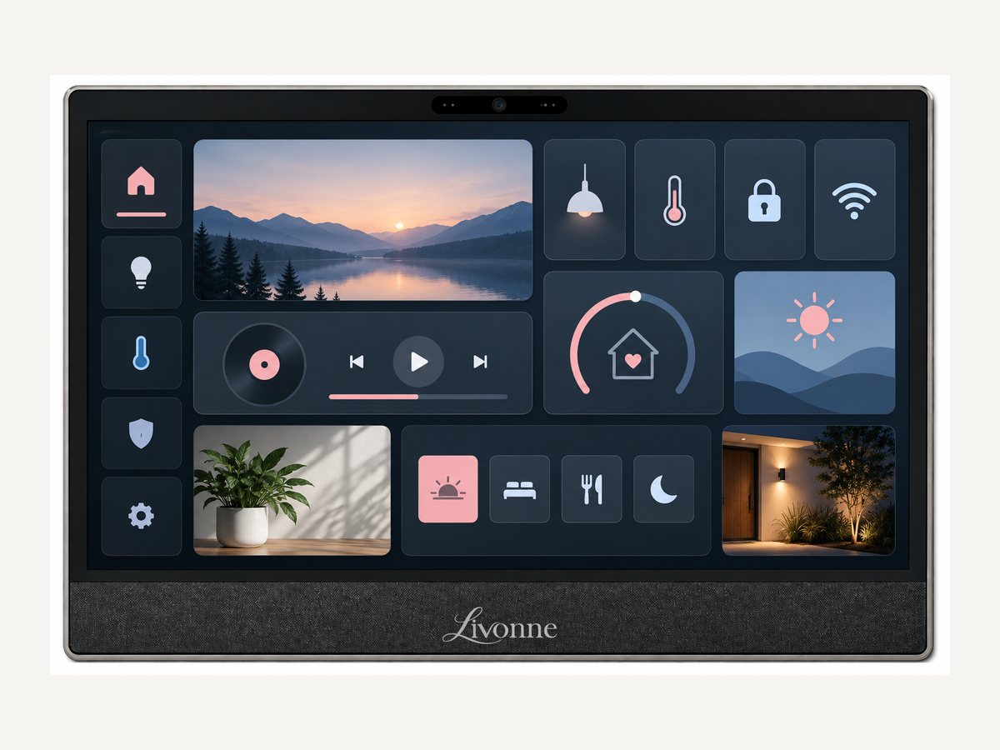
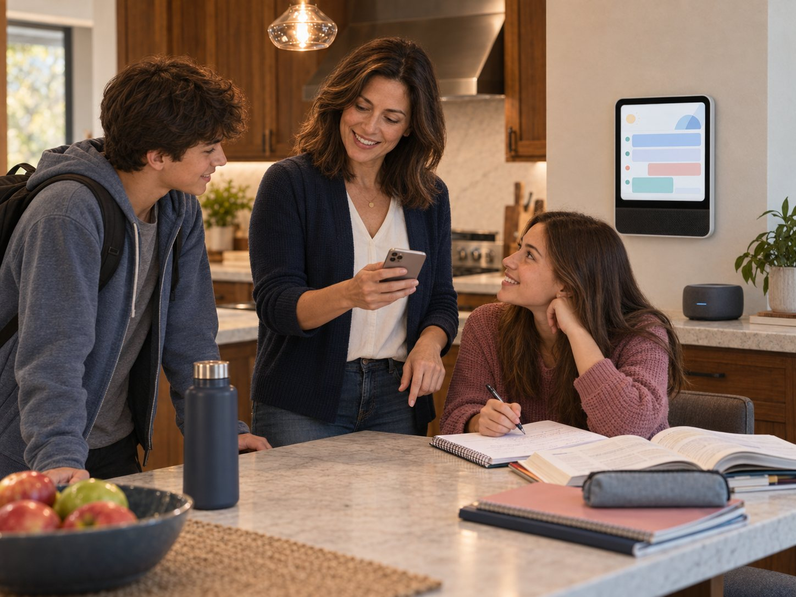

Device 1 of 4
Livonne Surface AIO
The family’s shared command center. Surface AIO keeps schedules, responsibilities, decisions, and family moments visible while presenting a personalized experience to each person who approaches it.

Livonne Family keeps the moving pieces of household life from landing on one person. It catches schedule conflicts, brings changes to the people they affect, proposes backup plans, gathers everyone’s answers, and follows the decision through.
For the kids, Livonne becomes a personal tutor and coach. It can explain homework in a way that finally clicks, help them prepare at the right moment, and make household responsibilities easier to share. Everyone receives personal support while the family shares only what it needs to function together.

1 / 4
The Family story
Meet Maya. She works full time, raises two teenagers with her husband, and carries the invisible logistics that keep their household moving. School forms, practices, rides, meals, homework, chores, and last-minute changes all seem to find their way back to her.
Then Livonne becomes the family organizer.
A moved practice reaches the right people before pickup. A conflict with Maya’s work schedule arrives with a backup plan the family can approve together. Her son studies history through a strategy game. Her daughter gets help with the math step she cannot see. Chores stop being another argument for Maya to assign and referee.
And small family moments begin reaching Grandpa without Maya serving as the messenger every time.
Livonne does not take over the family. It gives everyone the context and support to carry their part.